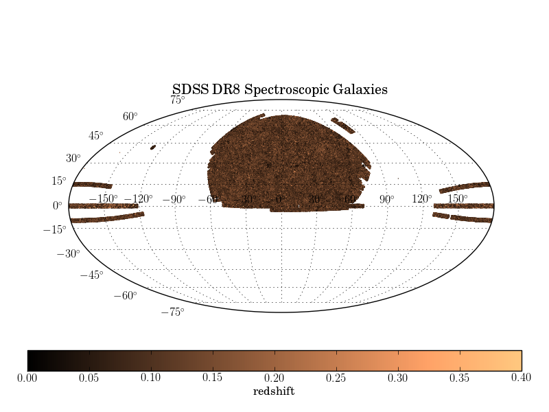
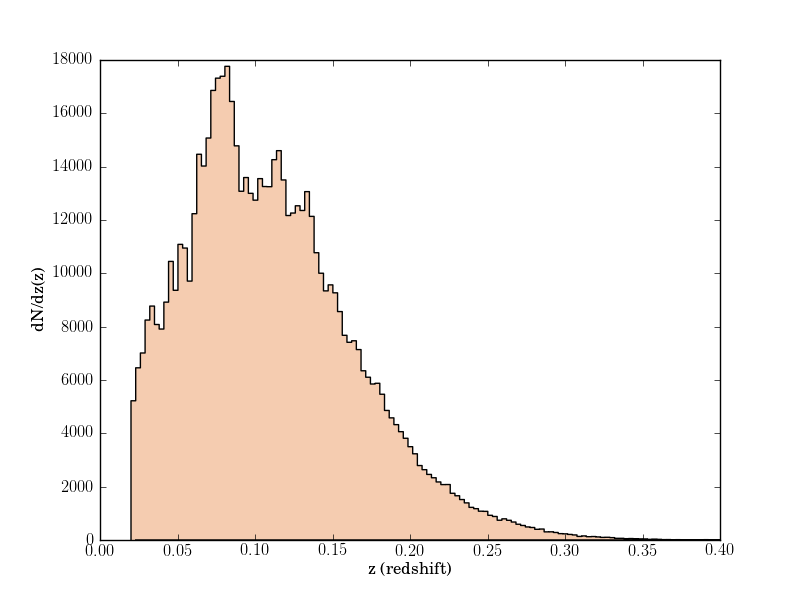
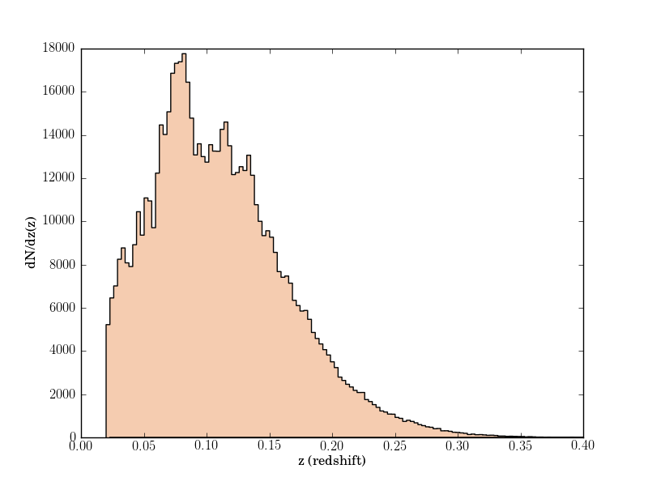

SDSS Spectroscopic Galaxy Sample¶
This figure shows photometric colors of the SDSS spectroscopic galaxy sample.
{kind=link}
 

{kind=link}
# Author: Jake VanderPlas <vanderplas@astro.washington.edu>
# License: BSD
# The figure is an example from astroML: see http://astroML.github.com
import numpy as np
from matplotlib import pyplot as plt
from astropy.visualization import hist
from astroML.datasets import fetch_sdss_specgals
data = fetch_sdss_specgals()
#------------------------------------------------------------
# plot the RA/DEC in an area-preserving projection
RA = data['ra']
DEC = data['dec']
# convert coordinates to degrees
RA -= 180
RA *= np.pi / 180
DEC *= np.pi / 180
ax = plt.axes(projection='mollweide')
ax.grid()
plt.scatter(RA, DEC, s=1, lw=0, c=data['z'], cmap=plt.cm.copper,
vmin=0, vmax=0.4)
plt.title('SDSS DR8 Spectroscopic Galaxies')
cb = plt.colorbar(cax=plt.axes([0.05, 0.1, 0.9, 0.05]),
orientation='horizontal',
ticks=np.linspace(0, 0.4, 9))
cb.set_label('redshift')
#------------------------------------------------------------
# plot the r vs u-r color-magnitude diagram
u = data['modelMag_u']
r = data['modelMag_r']
rPetro = data['petroMag_r']
plt.figure()
ax = plt.axes()
plt.scatter(u - r, rPetro, s=1, lw=0, c=data['z'], cmap=plt.cm.copper,
vmin=0, vmax=0.4)
plt.colorbar(ticks=np.linspace(0, 0.4, 9)).set_label('redshift')
plt.xlim(0.5, 5.5)
plt.ylim(18, 12.5)
plt.xlabel('u-r')
plt.ylabel('rPetrosian')
#------------------------------------------------------------
# plot a histogram of the redshift
plt.figure()
hist(data['z'], bins='knuth',
histtype='stepfilled', ec='k', fc='#F5CCB0')
plt.xlim(0, 0.4)
plt.xlabel('z (redshift)')
plt.ylabel('dN/dz(z)')
plt.show()